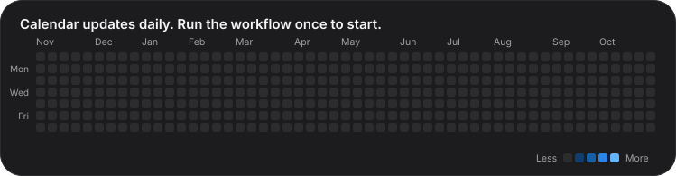

Sushant Sutar
Python · Machine Learning · Data Mining
Skills
Projects
Data-Mining-Case-Studies
Four case studies on real datasets, each pairing a preprocessing technique with a model.
AI-ML
Learning repository for AI/ML algorithms, projects and practical implementations.
Docker
Notes, experiments and sample containers, from a first container to fundamentals.
Git_Github
Git and GitHub basics. Early stage.
Activity
